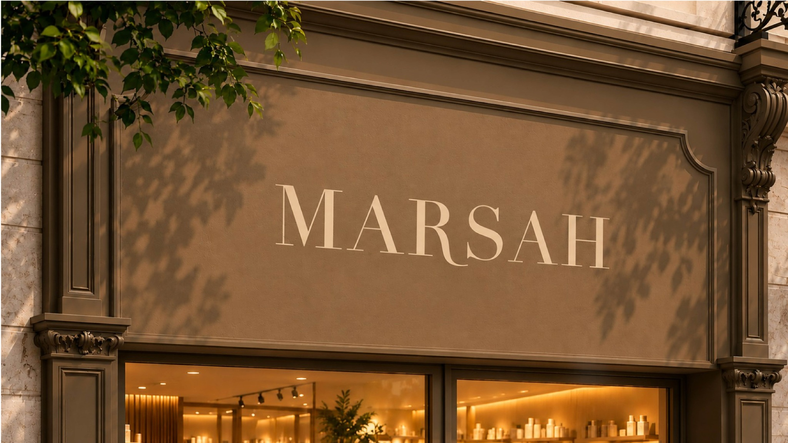
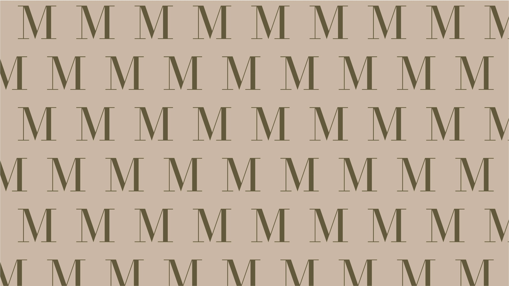

01
Modern
Clear forms, disciplined layouts and an international point of view.
A discreet yet memorable expression of luxury, shaped by nature, emotion and the art of living well.

MARSAH was created as a contemporary fragrance and lifestyle house where every detail feels calm, intentional and distinct. We compose experiences rather than excess—objects that awaken emotion and become part of personal ritual.
Clear forms, disciplined layouts and an international point of view.
A soft sensory language expressed through texture, light and subtle detail.
Timeless materials, refined fragrance stories and an uncompromising standard.
Olive green, deep chocolate, warm off-white and soft natural neutrals create an atmosphere that is elegant without feeling distant.
